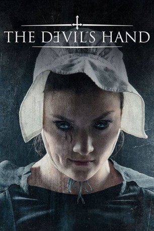

#10088 The Devil's Hand 
 
 IMDB-Wertung: 5.0 / 10
IMDB-Wertung: 5.0 / 10  Metascore: 0
Metascore: 0 
Eine schreckliche Prophezeiung belastet den Dorffrieden der kleinen Amisch-Gemeinde New Bethlehem. Die besagt, dass am sechsten Tag des sechsten Monats sechs Mädchen geboren werden, von denen eine die Auserwählte ist, in deren Körper der Teufel hineinfahren wird, wenn das Kind das 18. Lebensjahr erreicht ist. Als wirklich sechs Mädchen geboren werden und sich derren 18. Jahrestag nähert, ereignen sich im Dorf seltsame Vorkommnisse.
Jahr: 2014
Dauer: 85 Minuten
FSK: 16
Land: USA Studio: Roadside AttractionsTonspuren: DTS - ,
Untertitel: Deutsch,
Auflösung: 1080p (1920x800) Größe: 2723 MB
Genre: Thriller, Horror
Regisseur: Christian E. Christiansen
Drehbuch: Karl Mueller
Soundtrack: Anton Sanko
Darsteller:
- Alycia Debnam-Carey als Mary
 Rufus Sewell als Jacob Brown
Rufus Sewell als Jacob Brown Thomas McDonell als Trevor
Thomas McDonell als Trevor- Adelaide Kane als Ruth
- Leah Pipes als Sarah
 Ric Reitz als Sheriff Stevens
Ric Reitz als Sheriff Stevens Jennifer Carpenter als Rebekah
Jennifer Carpenter als Rebekah Colm Meaney als Elder Beacon
Colm Meaney als Elder Beacon- Jim McKeny als Elder Stone
- Katie Garfield als Abby
- Nicole Elliott als Hannah
- Jon Stafford als Ruth's Dad
 Jane McNeill als Sarah's mother
Jane McNeill als Sarah's mother- Holli Saperstein als Midwife
- Stacy Rabon als Ruth's Mom
- Tonya Bludsworth als Midwife #2
 Stacy Edwards als Susan
Stacy Edwards als Susan- Quentin Kerr als Sherriff's Deputy
- Katie Layman als Villager
- Sabrina Layman als Villager
- Melissa Lozoff als Hannah's Mom
- Allison Munn als Catherine
- Ethan Alexander McGee als Thomas
- Robin Robertson als Tobias Maker
- D.L. Anderson als Midwife
- George Bryant II als Doctor
- Michael J. Flanagan als Amish Villager
 Randy Grazio als Hannah's Dad
Randy Grazio als Hannah's Dad- Drew Grey als Frank
- Deborah Johnson als Villager
- Joe Montanti als Town Local
- Matt Perkinson als Villager
- Martin Petersen als Town Elder
- Darrell Rackley als Village elder
- Tammy Rackley als Pedestrian pushing baby stroller
- Paul Shaplin als Village Elder
- Melcher Smith als Deputy Waldrop
- Zachary Steffey als Party Goer
- Justin A. Thuesen als Raver
- Kathy Walton als Midwife
- Jacob Yakob als Drunk Party Goer
- Andrea Alcorn als Amish Villager (uncredited)
 James Alcorn als Amish Villiager (uncredited)
James Alcorn als Amish Villiager (uncredited)- Laura Avery als Amish Villager (uncredited)
- Alyssa Bauman als Townsperson (uncredited)
- Christopher Cozort als Villager (uncredited)
- Stephen Elliott als Villager (uncredited)
- Caitlin Alexa Hall als Villager (uncredited)
- Meagan Hall als Villager (uncredited)
- Taran Hall als Villager (uncredited)
Datei: X:\2014(A-F)\Devil's Hand, The (2014, FSK16, 1920x800) 3D.mkv seit 28.11.2018
Festplatte: HD 2013(I-Z)-2014(A-Z)
 Es gibt insgesamt 119 Filme in der Gruppe '2014(A-F)'
Es gibt insgesamt 119 Filme in der Gruppe '2014(A-F)'